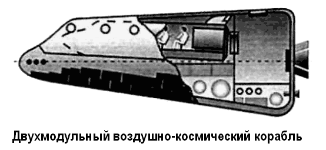
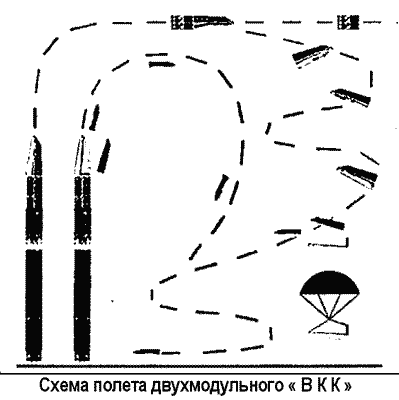

Двухмодульный воздушно-космический корабль
Тем не менее концепция «ВКК» (сокращение от «воздушно-космический корабль») заслуживает внимания, поскольку позволяет решить несколько серьезных проблем, связанных с проектированием и эксплуатацией многоразовых космических систем.
При разработке воздушно-космического корабля были учтены следующие требования: вместимость — от 2 до 6 человек, масса полезной нагрузки — от 2 до 3 тонн, возвращаемого груза — от 0,5 до 1 тонны, многоразовость применения основных элементов корабля, необходимость обеспечения аварийного спасения экипажа на старте и начальном участке полета.

А кроме того — возможность полета и маневра в космосе и в атмосфере, использование при необходимости грузового контейнера и другого космического аппарата, самолетная посадка на обычный аэродром. В результате проектных изысканий получился корабль «ВКК», состоящий из двух аппаратов-модулей: один — крылатый, другой выполнен по схеме несущего корпуса Модули соединены не последовательно, как у «Союза», а параллельно.
При этом самолет (пилотируемый модуль) устанавливается на несущий корпус (служебный модуль) с некоторым утоплением, крепится жестко в двух или трех точках при помощи быстроразъемных соединений — например, пироболтов.
Аналогично закреплен и защитный кожух-обтекатель.
Пилотируемый модуль используется многократно, служебный — один раз, но при этом он является сменным, что расширяет функциональные возможности корабля за счет установки той или иной его модификации. В зависимости от выполняемых задач служебный модуль имеет различное оборудование и разного объема топливные баки.
Другая особенность «ВКК» состоит в том, что технологическое соединение пилотируемого и служебного модулей происходит только после выхода корабля на орбиту на то время, пока он работает в космосе. Перед сходом «ВКК» с орбиты производится расстыковка кабелей и магистралей.
Внутренний стыковочный узел обеспечивает герметичное соединение обоих модулей для перемещения космонавтов в рабочий отсек служебного модуля. Такой подход позволяет использовать систему разделения модулей в аварийной ситуации на старте и начальном участке полета.
Как же устроены модули «ВКК»?
Пилотируемый имеет герметичную кабину для экипажа, крылья и двигательную установку, предназначенную для полета в атмосфере, в которой планируется использовать малогабаритные воздушно-реактивные двигатели. В нем установлены кресла для четырех-шести космонавтов, а сам он закрыт кожухом с иллюминаторами.
В служебном модуле размещается основное оборудование корабля. Здесь же находятся топливные баки, часть приборов, исполнительные элементы реактивной системы управления, при помощи которых «ВКК» совершает полет и ориентацию в космическом пространстве, внешний стыковочный узел.
Рабочий отсек предназначен для работы и отдыха космонавтов, выхода их в открытый космос, а также для перехода в другой космический аппарат через люки стыковочного узла.
По функциональному назначению его можно сравнить с бытовым отсеком «Союза».

Старт и выведение «ВКК» в космос осуществляются с помощью ракеты-носителя типа «Зенит» или с помощью самолета-носителя. При возникновении аварийной ситуации защитный кожух сбрасывается, и пилотируемый крылатый модуль уводится на безопасное расстояние; после этого он, используя собственную двигательную установку, совершает полет и посадку. В нормальном полете оба модуля скреплены до участка спуска на высоте 6-10 километров, когда они полностью расстыковываются. С этого момента каждый из них совершает самостоятельный полет и посадку. Крылатый модуль, имея малую массу и скорость и используя свой воздушно-реактивный двигатель, приземляется на обычный аэродром. Служебный модуль совершает торможение и спуск за счет аэродинамики несущего корпуса, а на последнем участке — на парашюте. Мягкая посадка обеспечивается амортизационными устройствами или ракетными двигателями, в зависимости от назначения служебного модуля и доставляемой на Землю полезной нагрузки.
«ВКК» может использоваться для решения самых разнообразных задач, включая и те, под которые создавались орбитальные корабли «Буран» и «Заря».